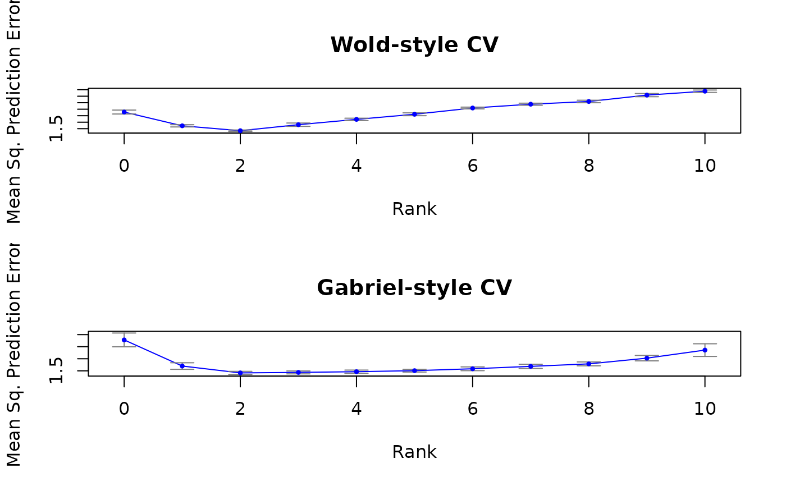

Plot the result of cv.svd.gabriel or
cv.svd.wold, optionally with error bars.
# S3 method for cvsvd
plot(
x,
errorbars = TRUE,
add = FALSE,
xlab = "Rank",
ylab = "Mean Sq. Prediction Error",
col = "blue",
col.errorbars = "gray50",
...
)the result of a cv.svd.gabriel or
link{cv.svd.wold} computation.
indicates whether or not to add error bars.
indicates whether or not to add to the current plot.
the label for the x axis.
the label for the y axis.
the color to use for showing prediction error.
the color to use for the error bars.
additional arguments for plot.
Plot the result of cv.svd.gabriel or
cv.svd.wold. This plots a the estimated prediction error as a
function of rank, optionally with error bars.
If add is TRUE, the current plot is not cleared.
# generate a rank-2 matrix plus noise
n <- 50; p <- 20; k <- 2
u <- matrix( rnorm( n*k ), n, k )
v <- matrix( rnorm( p*k ), p, k )
e <- matrix( rnorm( n*p ), n, p )
x <- u %*% t(v) + e
# perform 5-fold Wold-style cross-validtion
cvw <- cv.svd.wold( x, 5, maxrank=10 )
# perform (2,2)-fold Gabriel-style cross-validation
cvg <- cv.svd.gabriel( x, 2, 2, maxrank=10 )
# plot the results
par( mfrow=c(2,1) )
plot( cvw, main="Wold-style CV")
plot( cvg, main="Gabriel-style CV")
